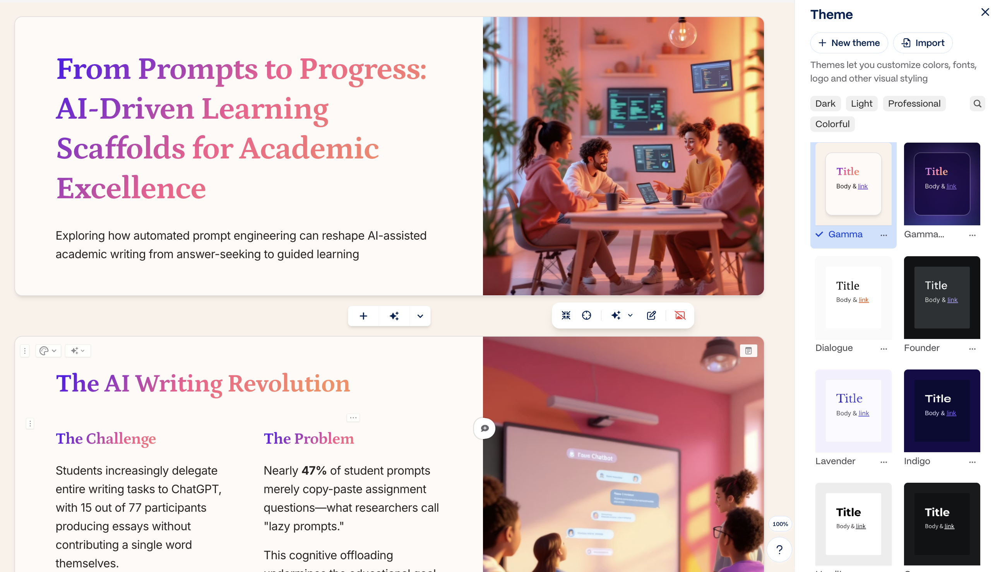
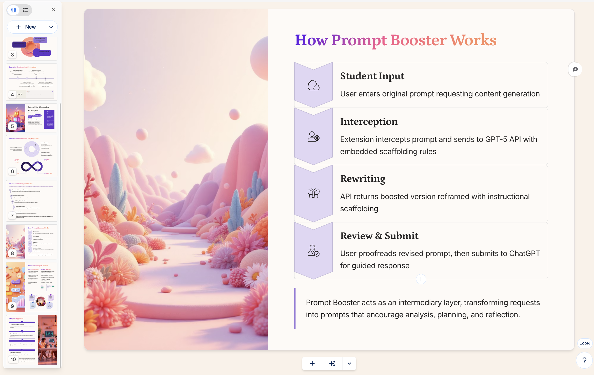
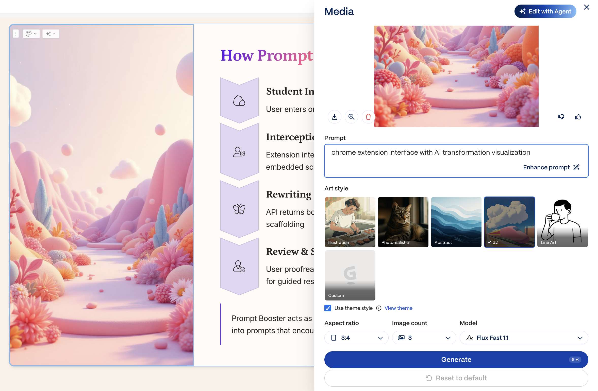
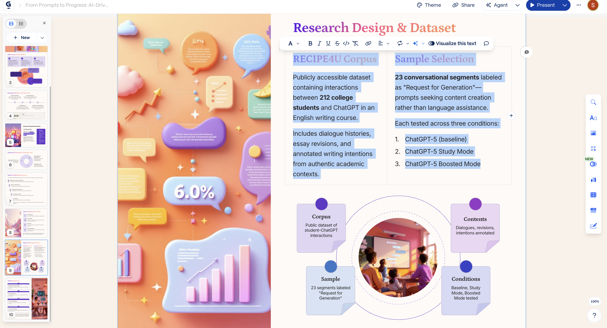

Smart Design Without Extra Prompting
When I first experimented with Gammas, I wasn’t sure what to expect. Instead of feeding it a detailed creative brief or stylistic preferences, I simply pasted the introduction and methodology sections of one of my research papers. That was it—no formatting instructions, no design hints, no color palette guidance. To my surprise, Gammas immediately produced a set of clean, well-structured slides.

What made it interesting was how different they looked from a traditional PowerPoint or Google Slides deck. Each slide—or rather, each card—was dynamically sized according to the amount of content it held. If a page contained more text, charts, or visuals, it expanded to fit; if it only had a short title and a single image, it became compact. This layout approach felt more like a fluid deck of cards than a static series of slides.
Each card isn’t just adaptive—it’s also customizable and flexible in size. When I add new layouts such as columns, boxes, or diagrams, the elements never overlap or break the structure. The entire card automatically expands and reflows to accommodate the new content, as if Gammas had already anticipated the design logic for me. It arranges the structure while still allowing room for manual adjustments. What’s fascinating is that all this happens without any prompting. Gammas seems to understand how to balance information, white space, and visual rhythm. The initial output already looked complete enough to present, even though I hadn’t given any design instructions.

Image Generation and Visual Customization
Another notable feature of Gammas is its built-in AI image generation system. By default, every image it produces is generated by AI, yet each one is editable. I can adjust the text prompt that was used to create the image—tweaking details or tone—and Gammas regenerates the visual instantly. The platform also allows selection of art styles that align with the overall mood of the slides—whether minimalist, illustrative, or photorealistic. There are advanced customization options such as aspect ratio, image count, and model choice, offering a good degree of creative control within one interface.
 
Beyond AI-generated visuals, Gammas integrates web image search directly into the editor. This makes it easy to look for reference images or stock photos without leaving the workspace. It eliminates the constant tab-switching typical in PowerPoint or Google Slides. Lastly, Gammas offers accent images that automatically match the theme or palette of the presentation, adding a touch of visual coherence—even when most of the design is automated.
AI-Assisted Text Editing and Visualization
Gammas’s text editing experience follows the same design logic as its layout system. It allows in-place AI editing: highlight a segment of text, then ask the AI to polish, expand, or brainstorm—no need to leave the editor. This built-in workflow makes it efficient to refine ideas while constructing slides.
I also appreciate the flexible styling. Any text block can be quickly transformed into formats such as “code style,” “blog quote,” or “info box,” helping emphasize key points and structure information more clearly. Even more interestingly, Gammas can visualize highlighted text automatically. It interprets meaning and creates a corresponding diagram on the slide, which can switch between formats like puzzle, arrow bars, or chain. It’s a subtle but useful way to turn written content into visual logic.

Smart Diagrams and Guided Inspiration
Gammas’s Smart Diagram tool includes a variety of diagram types and decorative layouts—from flowcharts to comparison grids. When inserted, each text box is automatically filled with sample content that loosely relates to the presentation topic. These placeholders are not perfect but provide a helpful starting point—a prompt for how ideas might be structured visually.
The diagrams are customizable through a monochrome palette system that keeps them visually consistent with the theme. The result is a layout that looks coherent while leaving room for personal adjustment.


Interactive Links and Embedded Content
Gammas redefines how links appear in slides. In most tools, a hyperlink is just underlined text. In Gammas, it can be a text link, a button, or a preview card showing a snippet of the linked page. Even more interesting, the entire website can be embedded directly into the slide, letting viewers interact with live web content without leaving the presentation. Compared with PowerPoint or Google Slides, Gammas feels more like an interactive storytelling medium than a static deck builder.

Comprehending and Structuring the Logic Behind Text
Gammas performs well in understanding and structuring the logic of my writing. Instead of just summarizing or decorating content, it interprets and reorganizes it to make the reasoning clearer.
For example, when I uploaded a section on Wood’s Scaffolding Framework, Gammas recognized the hierarchical logic in my writing. It used the main concept as the slide title and listed the five scaffolding functions vertically, presenting them as parallel rather than sequential. In other words, Gammas can differentiate between parallel, nested, and sequential structures when visualizing ideas. This gives the slides a sense of internal coherence instead of mechanical assembly.

That said, its comprehension has limits. For conceptually complex relations—such as derivative frameworks or theoretical origins—it sometimes misses the connection. When I discussed how Vygotsky’s Zone of Proximal Development underlies Wood’s Scaffolding Framework, Gammas failed to capture that evolutionary link. Still, its performance is adequate, leaving meaningful room for human reasoning and refinement.
Reflection
Overall, Gammas functions as an efficient AI-supported presentation generator. Even the initial draft it produced was coherent and visually balanced. If one’s standards aren’t overly strict, the first version could already be used with only minor edits. Its integrated workflow—covering image search, text refinement, and layout control—keeps everything in one place, minimizing external switching.
That said, the main limitation lies in element flexibility. You can’t freely drag and position text or images as in PowerPoint; you operate within a predefined framework. Within that, you can switch styles or replace diagrams, but can’t fully break the structure. To me, this design choice makes Gammas feel more like a controlled, design-consistent environment rather than a freeform canvas. For users seeking speed and structural clarity, that’s an acceptable trade-off.
````